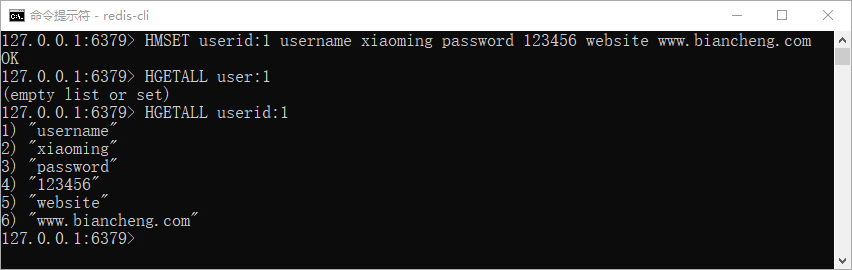

Redis数据类型
经过前面介绍，我们知道 Redis 是 Key-Value 类型缓存型数据库，Redis 为了存储不同类型的数据，提供了五种常用数据类型，如下所示：
当然您也使用 MSET 命令一次性存储多个值，并使用 MGET 命令查询多个 key，如下所示：
下面使用 HMSET 命令来存储一个包含了用户基本信息的对象，如下所示：
下面使用 LPUSH 和 LRANGE 命令对 List 数据类型进行简单演示：
下面通过 SADD 命令添加 string 元素到 Set 集合中，若添加成功则返回 1，如果元素已经存在，则返回 0。示例如下：
下面通过 zadd 命令添加元素到集合，若元素存在于集合中，则不能添加成功。示例如下：
在线练习工具：https://try.redis.io/
查看更多命令：https://redis.io/commands
- string（字符串）
- hash（哈希散列）
- list（列表）
- set（集合）
- zset（sorted set：有序集合）
注意：这里指的数据类型是 Value（值） 的数据类型，而非 key。
string字符串
String 是 Redis 最基本的数据类型。字符串是一组字节，在 Redis 数据库中，字符串具有二进制安全（binary safe）特性，这意味着它的长度是已知的，不由任何其他终止字符决定的，一个字符串类型的值最多能够存储 512 MB 的内容。二进制安全：是一种主要用于字符串操作函数的计算机编程术语。只关心二进制化的字符串，不关心具体的字符串格式，严格的按照二进制的数据存取。这保证字符串不会因为某些操作而遭到损坏。
下面我们使用 SET 命令储存一个字符串，然后使用 GET 命令查看它：127.0.0.1:6379> set website "www.biancheng.net" OK 127.0.0.1:6379> get website "www.biancheng.net"在上述事例，我们使用 Redis 存储了一个键为 website，值为 www.baincheng.net 的 string 类型数据。
当然您也使用 MSET 命令一次性存储多个值，并使用 MGET 命令查询多个 key，如下所示：
127.0.0.1:6379> MSET name www.biancheng.net topic Redis OK 127.0.0.1:6379> MGET name topic 1) "www.biancheng.net" 2) "Redis"
hash散列
hash 散列是由字符串类型的 field 和 value 组成的映射表，您可以把它理解成一个包含了多个键值对的集合。由于 Hash 类型具有上述特点，所以一般被用来存储对象。下面使用 HMSET 命令来存储一个包含了用户基本信息的对象，如下所示：
127.0.0.1:6379> HMSET userid:1 username xiaoming password 123456 website www.biancheng.net OK 127.0.0.1:6379> HGETALL userid:1 1) "username" 2) "xiaoming" 3) "password" 4) "123456" 5) "website" 6) "www.biancheng.net"

图1：Redis Hash类型演示
上述示例中，我们是使用到了 HMSET 和 HGETALL 命令，前者可以同时设置多个字段，后者用来查询全部字段。图1：Redis Hash类型演示
注意：一个 Hash 中最多包含 2^32-1 个键值对。
list列表
Redis List 中的元素是字符串类型，其中的元素按照插入顺序进行排列，允许重复插入，最多可插入的元素个数为 2^32 -1 个（大约40亿个），您可以添加一个元素到列表的头部（左边）或者尾部（右边）。下面使用 LPUSH 和 LRANGE 命令对 List 数据类型进行简单演示：
#LPUSH 列表添加元素命令 127.0.0.1:6379> LPUSH biancheng Java (integer) 1 127.0.0.1:6379> LPUSH biancheng Python (integer) 2 127.0.0.1:6379> LPUSH biancheng C (integer) 3 127.0.0.1:6379> LPUSH biancheng SQL (integer) 4 127.0.0.1:6379> LPUSH biancheng Redis (integer) 5 127.0.0.1:6379> LPUSH biancheng Golang (integer) 6 #LRANGE 查看列表元素 #最开始插入的在最后，最后插入位于第一个位置，和队列相似。 127.0.0.1:6379> LRANGE biancheng 0 6 1) "Golang" 2) "Redis" 3) "SQL" 4) "C" 5) "Python" 6) "Java"注意：Redis 的列表类型同样遵循索引机制。
set集合
Redis Set 是一个字符串类型元素构成的无序集合。在 Redis 中，集合是通过哈希映射表实现的，所以无论是添加元素、删除元素，亦或是查找元素，它们的时间复杂度都为 O(1)。下面通过 SADD 命令添加 string 元素到 Set 集合中，若添加成功则返回 1，如果元素已经存在，则返回 0。示例如下：
127.0.0.1:6379> SADD www.biancheng.net HTML (integer) 1 127.0.0.1:6379> SADD www.biancheng.net Pandas (integer) 1 127.0.0.1:6379> SADD www.biancheng.net NumPy (integer) 1 127.0.0.1:6379> SADD www.biancheng.net Matplotlib (integer) 1 127.0.0.1:6379> SADD www.biancheng.net JS (integer) 1 127.0.0.1:6379> SADD www.biancheng.net HTML (integer) 0 127.0.0.1:6379> SADD www.biancheng.net HTML (integer) 0 #SMEMBERS命令查看集合中元素，元素会无序排列 127.0.0.1:6379> SMEMBERS www.biancheng.net 1) "Matplotlib" 2) "HTML" 3) "JS" 4) "Pandas" 5) "NumPy"由于 Set 集合中的成员具有唯一性，所以重复插入 HTML 元素不会成功，集合的同样可容纳 2^32 -1 个元素。
zset有序集合
Redis zset 是一个字符串类型元素构成的有序集合，集合中的元素不仅具有唯一性，而且每个元素还会关联一 个 double 类型的分数，该分数允许重复。Redis 正是通过这个分数来为集合中的成员排序。下面通过 zadd 命令添加元素到集合，若元素存在于集合中，则不能添加成功。示例如下：
127.0.0.1:6379> del biancheng (integer) 1 127.0.0.1:6379> zadd biancheng 0 Python (integer) 1 127.0.0.1:6379> zadd biancheng 1 Java (integer) 1 127.0.0.1:6379> zadd biancheng 2 C++ (integer) 1 127.0.0.1:6379> zadd biancheng 3 MySQL (integer) 1 127.0.0.1:6379> zadd biancheng 4 Redis (integer) 1 #重复元素无法添加成功 127.0.0.1:6379> zadd biancheng 4 Redis (integer) 0 #重复分值添加成功 127.0.0.1:6379> zadd biancheng 4 GOLANG (integer) 1 #查看指定成员的分值 127.0.0.1:6379> ZSCORE biancheng Redis "4" 查看zset中的所有成员 127.0.0.1:6379> zrange biancheng 0 4 1) "Python" 2) "Java" 3) "C++" 4) "MySQL" 5) "GOLANG" 6) "Redis"除了上述五种类型之外，Redis 还支持 HyperLogLog 类型，以及 Redis 5.0 提供的 Stream 类型。在后续章节会做相应介绍。
在线练习工具：https://try.redis.io/
查看更多命令：https://redis.io/commands
关注公众号「站长严长生」，在手机上阅读所有教程，随时随地都能学习。内含一款搜索神器，免费下载全网书籍和视频。

微信扫码关注公众号